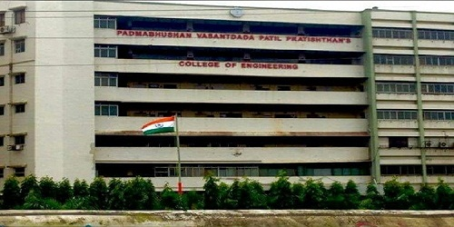
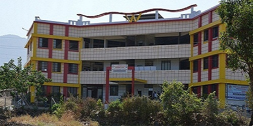
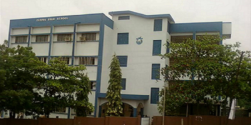

About Me
"Knowing others is intelligence, knowing yourself is true wisdom."
- Lao Tzu
Hello, my name is Yashad Ramesh Margaj! I live in Badlapur, which is an amazing and exhilarating suburb of Mumbai. Presently, I am a Final Year Undergraduate pursuing Bachelor of Engineering in Computer Engineering from the University of Mumbai, Mumbai. Previously, I had completed a technical diploma coursework in computer engineering from the G. V. Acharya Polytechnic, Shelu. I had spent a memorable time of my life (Class I to Class X) at the Fatima High School, Badlapur. The colossal passion for learning new things, ability to work hard with strong perseverance, and consistent propensity to think out-of-the-box has helped me to gain worthwhile industrial exposure through some challenging opportunities. Currently, I am working as a Software Developer Intern at CoolAge, a Machine Learning Intern at Foxmula, and an Open Source Developer at Freeware Lovers GmbH. I have successfully worked as a Technology Intern at Bright Network, and a Social Media Marketing Intern at IIT Bombay. Along with this strong set of technical experience, I have demonstrated great enthusiasm in leading and building various communities at our institutions. Also, I have worked on a wide range of projects (including but not limited to - Machine Learning projects, Android projects, Web projects, Chrome Extension projects, Google Assistant projects, and some native Java | C | C++ projects) making use of various frameworks, services, and technologies. The major aim of my life is to bring about a revolutionary change in the world by eliminating global climatic, health, and social issues through constructive use of technology. Thank you :)
Education
"An investment in knowledge pays the best interest."
- Benjamin Franklin
|

Padmabhushan Vasantdada Patil Pratishthan's College of Engineering, Sion, Mumbai, Maharashtra, India Relevant Coursework: Data Structures, Analysis of Algorithms, Theory of Computer Science, Database Management System, Operating System, Computer Networks, Discrete Mathematics. |
|

G. V. Acharya Polytechnic, Shelu, Karjat, Maharashtra, India Relevant Coursework: Programming in C, Object Oriented Programming, Windows Programming, Introduction to Linux, Software Engineering, Software Testing, Communication Skills. |
|

Fatima High School, Badlapur, Thane, Maharashtra, India Fatima High School, Badlapur is a minority English Medium School. It was founded in 1977 by the Pilar Fathers of Fatima Catholic Church, belonging to the Society of the Missionaries of St. Francis Xavier Pilar Goa. |
Experience
"The only source of knowledge is experience."
- Albert Einstein
TECHNICAL
|
CoolAge, Delhi, Delhi, India (Remote) > Working on developing the community webpage of CoolAge's official website, and is also contributing to a national project named "Swadeshi Andolan". |
|
Foxmula, Bangalore, Karnataka, India (Remote) > Working on the "Price Prediction of Dream Home" Machine Learning project to predict the most optimal result with highest accuracy. |
|
Freeware Lovers GmbH, Eckental, Bavaria, Germany (Remote) > Working on developing the Freeware Lovers GmbH's official website, while simultaneously contributing to available open-source projects. |
|
Bright Network, London, England, United Kingdom (Remote) > Worked as a remote Technology Intern at Bright Network, London. |
|
IIT Bombay, Mumbai, Maharashtra, India > Worked as a Social Media Marketing Intern at Techfest, IIT Bombay. |
NON-TECHNICAL
|
AWS, Bangalore, Karnataka, India > Working as a volunteer for organizing the AWS Community Day, India. |
|
AWS, Seattle, Washington, United States > Representing AWS Educate and leading the AWS Educate Student Ambassador Community at our B.E. institution. |
|
Microsoft, Redmond, Washington, United States > Representing Microsoft and leading the Microsoft Student Partner Community at our B.E. institution. |
|
IIT Bombay, Mumbai, Maharashtra, India > Worked as the Campus Ambassador of Techfest, IIT Bombay at our B.E. institution. |
|
Internshala, Gurgaon, Haryana, India > Worked as the Face of Internshala (India's biggest and no.1 internship-providing platform) at our B.E. institution. |
|
G. V. Acharya Polytechnic, Shelu, Maharashtra, India > Worked as a volunteer for organizing the annual youth festival of our diploma institution. |
|
G. V. Acharya Polytechnic, Shelu, Maharashtra, India > Worked as the Deputy Technical Secretary of the Student Council at our diploma institution. |
Projects
"Working on new projects gives you the opportunity to learn and absorb new things."
- Michelle Ryan
|
Greeting Extension > Designed and developed the entire extension from scratch by using HTML5, CSS3, and JSON. |
|
The Insightful Game > Conducted thorough research about Google, right from the day it was established till today's technological advancements. |
Smart Voter > Designed the overall UI of the project using Java and XML. |
Skills
"It is possible to fly without motors, but not without knowledge and skills."
- Wilbur Wright
Contact
"Connecting with others enhances creativity and productivity."
- Yashad Margaj


|
Very soon on LinkedIn again :)